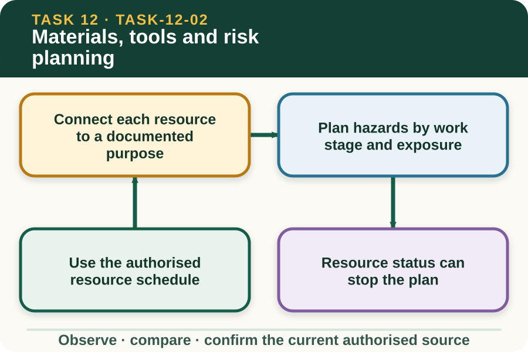

Learning purpose
Match planned work to resources, hazards, controls and authority checks.
Task 12 · Lesson 2 of 4
Match planned work to resources, hazards, controls and authority checks.
Learning purpose
Match planned work to resources, hazards, controls and authority checks.
Success criteria
Learning boundary
Supplementary learning and formative practice only. Current RTO assessment, local procedures and authorised supervision control real work.

A resource schedule identifies the materials, equipment categories, quantities and document references approved for the job. The learner checks the list against the brief rather than selecting practical resources from memory or an online example.
This lesson does not teach selection or use of practical equipment. Condition criteria, suitability, preparation and operation remain with current manufacturer information, local procedures and supervised demonstration.
Every listed resource should have a traceable relationship to a specified part of the job. Unexplained extras, missing quantities or substituted categories can indicate a version error, incomplete planning or an unauthorised change.
A learner may reconcile identifiers and counts on a fictional schedule. They do not approve substitutions or decide that a different resource is equivalent to the authorised item.
Fencing work can involve sharp material, stored energy, manual handling, uneven ground, vegetation, livestock, vehicles, public access and possible services. A useful risk plan identifies who or what could be exposed and where the decision point occurs.
The public site names hazard categories only. Exact controls, exclusion distances, practical setup, protective equipment and work methods require the approved local risk process and direct supervision.
A resource list may state available, verified, unavailable, quarantined or status unknown. An unknown or conflicting status is a hold point because a list entry does not prove that the resource is suitable for practical work.
Keep the item outside the planned issue and report the record mismatch. Do not inspect, adjust, repair or demonstrate it from guidance on the website.
Fictional worked example
Observed evidence: A fictional resource schedule dated 11 August 2027 lists twelve material bundles and five equipment identifiers. Identifier EQ-04 appears as verified on the issue list but status unknown on the current condition register. Decision and reason: Taylor does not resolve the conflict by looking at the item or substituting EQ-05, because suitability and substitution remain authorised decisions. Safe action: Taylor marks EQ-04 unavailable for planning and reports both record entries to the supervisor. Result: The supervisor corrects the issue list and revises the fictional schedule. Next check or record: Taylor records the confirmed status and updated document version without providing equipment-check or use instructions.
Planning should state who confirms the work area, who controls resource issue, who communicates changes and where the team stops for supervisor review. This reduces assumptions when several people prepare different parts of the job.
Transport, loading and site movement are practical operations controlled locally. The lesson records responsibility and readiness states only, without directing how people, materials or equipment are moved.
A plan is ready for the supervisor's decision when the brief, document versions, resource schedule, site verification, risk documentation, roles and hold points agree. One green field cannot cancel an unresolved red field elsewhere.
Website completion does not release practical work. The authorised teacher and RTO process determine when, where, for what purpose and under what direct supervision a student participates.
Formative practice
Each option explains the consequence. These answers save only on this device.
Written application
Apply and keep a learning record
Match supplied identifiers to the brief, mark status conflicts, place hazard-category cards beside planning stages and draft the supervisor questions. Do not inspect or direct practical resources.
Learning record: A supplementary-learning resource trace and risk-authority map with clear hold points.
Lesson responses and the activity are formative learning only. Formal sufficiency and competence remain with the current RTO process.
Source basis: AHCINF206 Release 1 preparation, hazard reporting, resource and faulty-item concepts. The current local risk process, manufacturer information, practical demonstration and supervisor control every real resource and work decision.